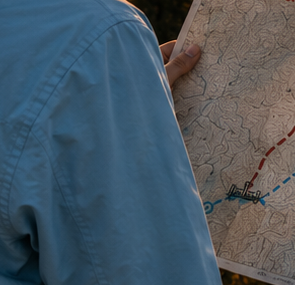

MAIN CHARACTER — PHOTOGRAPHIC REFERENCE
ANGLES THAT EXIST
DETAIL

| Build | Athletic, approximately 168 cm. Jacket size M. |
| Hair | Mid-brown with warm highlights, mid-height ponytail, loose flyaway strands at the crown. Never loose, never braided. |
| Jacket | Terra Nexus wind shell, Glacier Blue #5A90BE. Hood worn down and bunched behind the neck. Zipped. |
| Below | Slim dark charcoal technical trouser. Low brown approach boot. |
| Pack | Rust orange, worn over the shell. Deep Red patch on the pack's upper front panel — never on the jacket. |
| Light | Golden hour, low sun behind or beside her, warm rim on hair and shoulders. |
| Fit | These plates are the Rev A cut — loose through the waist. Rev B is slim athletic: princess seams, 6.4 cm of waist suppression, hem scooped at centre back. See the turnaround. |
| Cuffs | TERRA wraps the left wrist, NEXUS the right. The cuffs are out of frame in every plate here. |
| Shoulder | Already correct — the shoulder patch has been removed from these frames. |
| Her face | Every frame in the set is shot from behind or over the shoulder. It has never been seen. Run GENERATION-BRIEF.md shot 1 and lock it, or it will drift. |
| Front, side | No frame shows either. The turnaround specifies them; nothing observes them. |
Plates cut unretouched from Ouput Pictures - Updated Images. This is the character as she has actually been rendered — not an illustration of her.